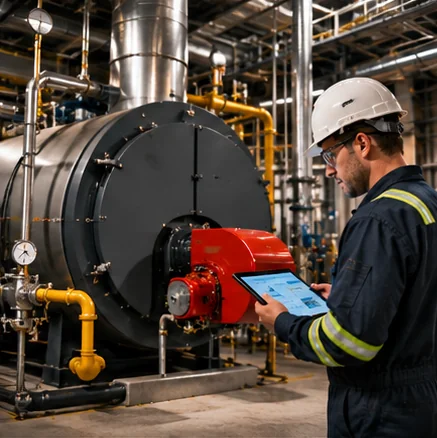

SteamWise AI
An educational boiler-plant fault-detection solution combining LBNL fault data, supervised ML, human review and an engineering training experience.
AI-generated conceptual visual; not a photograph of the project's actual site or equipment.
Challenge, methodology and responsible interpretation.
Use case
Support power engineering learning through interpretable fault classification, interactive exploration and training resources. No automatic control or safety-system action is provided.
Approach
The project documents data preparation, development and external verification of a Random Forest classifier and an emphasis on class imbalance and time-aware validation.
Evaluation boundary
High internal test accuracy was documented, but independent verification and the Normal class require further attention. Historical accuracy is not equivalent to proven real-world reliability.
Access status
The project website is linked as supplied, but was returning a 503 response during this review. The case study stays accessible even when the external deployment is unavailable.
Connected SteamWise components
One central project includes its main application, AI learning assistant and equipment-recognition prototype.